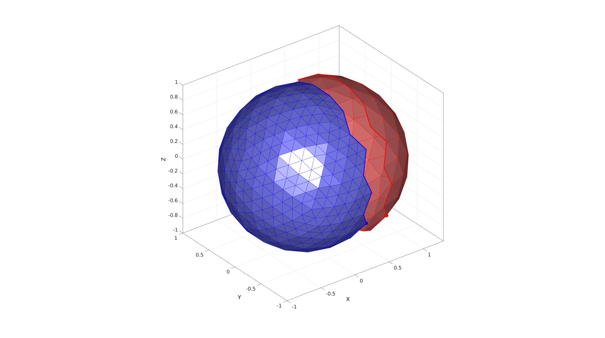
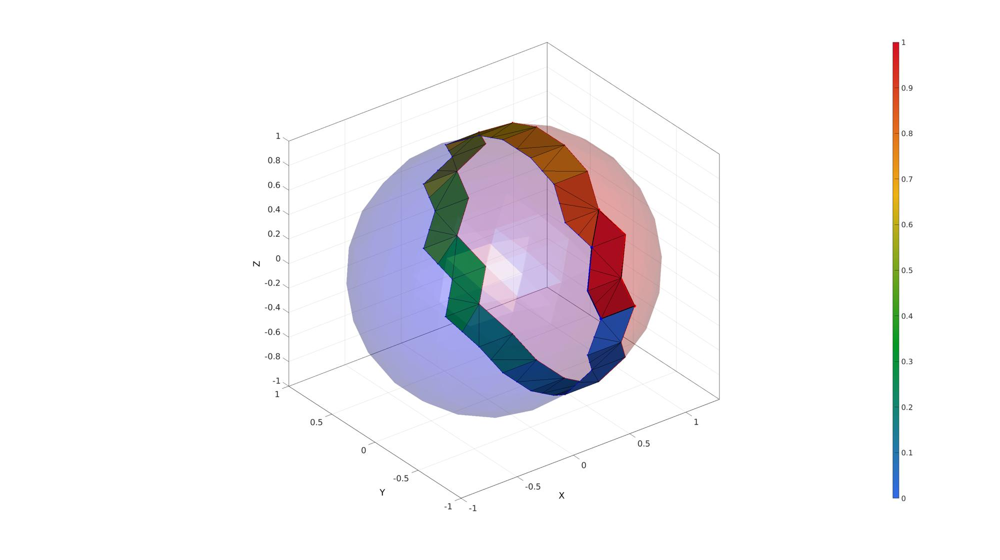
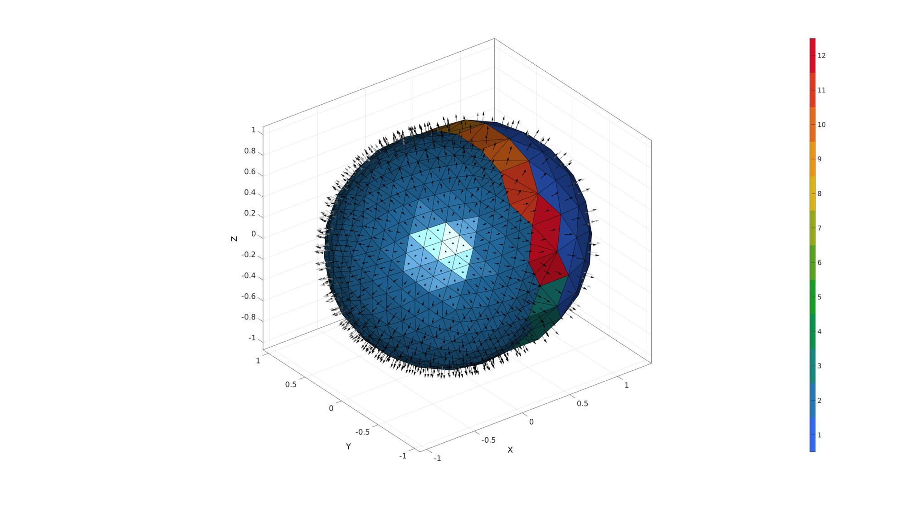
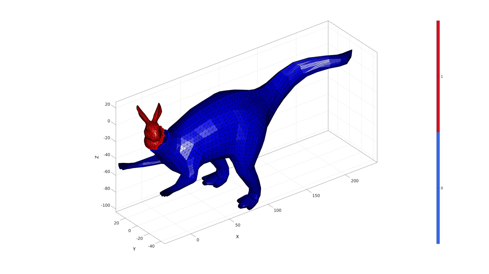
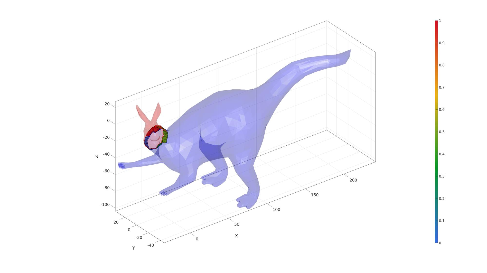
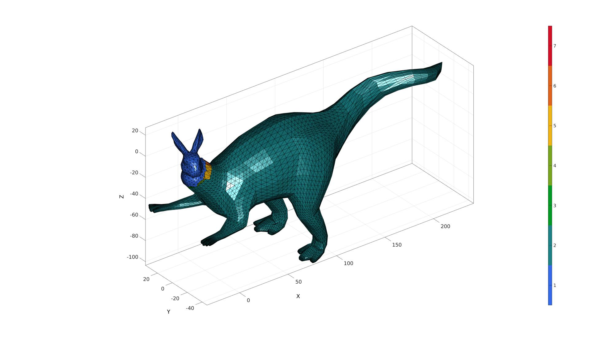
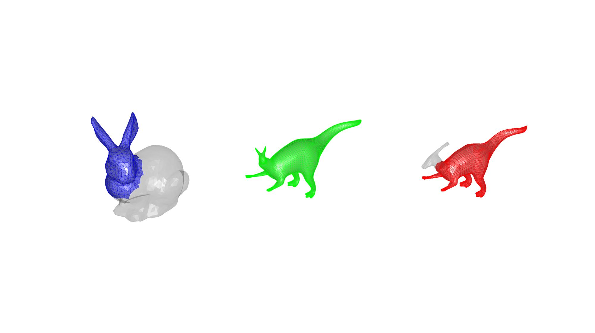

delaunayZip
Below is a demonstration of the features of the delaunayZip function
Contents
Syntax
[F,V,C]=delaunayZip(F1,V1,F2,V2,inputStruct);
Description
The delaunayZip function stitches 2 surfaces together allong the input edges by using step-wise local 2D Delaunay triangulation.
Examples
clear; close all; clc;
%Plot settings
c1=[0.5 0.5 1];
c2=[1 0.5 0.5];
c3=[0.5 1 0.5];
Example: Stitching 2 surfaces together, partial spheres
Create example geometry
[F,V]=geoSphere(2,1); [D]=patchEdgeLengths(F,V); logicCutVertices=V(:,1)>(mean(V(:,1))+0.5*mean(D)); logicCutFaces=all(logicCutVertices(F),2); F1=F(logicCutFaces,:); V1=V; V1(:,1)=V1(:,1)+mean(D); [F1,V1]=patchCleanUnused(F1,V1); F2=F(~logicCutFaces,:); V2=V; [F2,V2]=patchCleanUnused(F2,V2); [F2,V2]=subtri(F2,V2,1); [Eb1,E1,indBoundary1]=patchBoundary(F1,V1); [ind1]=edgeListToCurve(Eb1); ind1=ind1(1:end)'; [Eb2,E2,indBoundary2]=patchBoundary(F2,V2); [ind2]=edgeListToCurve(Eb2); ind2=ind2(1:end)'; ind2=flipud(ind2); startInd1=ind1(1); [~,startInd2]=minDist(V1(startInd1,:),V2); startInd=[startInd1 startInd2]';
Visualizing surface sets
cFigure; hold on; gpatch(F1,V1,'rw','r'); gpatch(F2,V2,'bw','b'); plotV(V1(ind1,:),'r-','LineWidth',3); plotV(V2(ind2,:),'b-','LineWidth',3); plotV(V1(startInd(1),:),'r.','MarkerSize',50); plotV(V2(startInd(2),:),'b.','MarkerSize',50); axisGeom; camlight headlight; drawnow;
stitching using delaunayZip
%Create input structure
inputStruct.plotOn=1;
inputStruct.distLocal=2*max(patchEdgeLengths(F,V));
inputStruct.startInd=startInd;
inputStruct.ind1=ind1;
inputStruct.ind2=ind2;
[F,V,C]=delaunayZip(F1,V1,F2,V2,inputStruct);
 Visualize results
cFigure; hold on; gpatch(F,V,C,'k',1); patchNormPlot(F,V); axisGeom; camlight headlight; colormap(gjet(250)); icolorbar; drawnow;
Example: Stitching 2 surfaces together, mutant bunnySaurus
[F1,V1]=stanford_bunny('g');
F1_ori=F1; V1_ori=V1;
R=euler2DCM([0 0.25*pi 0]);
V1=V1*R;
logicKeep1=V1(:,1)<-25;
logicKeep1=any(logicKeep1(F1),2);
F1=F1(logicKeep1,:);
V1=V1*R';
V1=V1/2.8;
[F1,V1]=patchCleanUnused(F1,V1);
[F2,V2]=parasaurolophus;
[F2,V2]=subtri(F2,V2,1);
F2_ori=F2; V2_ori=V2;
V2=V2*50;
R=euler2DCM([0 0.30*pi 0]);
V2=V2*R;
logicKeep2=V2(:,1)>-48;
logicKeep2=any(logicKeep2(F2),2);
F2=F2(logicKeep2,:);
V2=V2*R';
[F2,V2]=patchCleanUnused(F2,V2);
V2(:,1)=V2(:,1)+40;
V2(:,2)=V2(:,2)-5;
V2(:,3)=V2(:,3)-32;
[Eb1,E1,indBoundary1]=patchBoundary(F1,V1);
[ind1]=edgeListToCurve(Eb1);
ind1=ind1(1:end)';
[Eb2,E2,indBoundary2]=patchBoundary(F2,V2);
[ind2]=edgeListToCurve(Eb2);
ind2=ind2(1:end)';
startInd1=ind1(1);
[~,startInd2]=minDist(V1(startInd1,:),V2);
startInd=[startInd1 startInd2]';
cFigure; hold on; gpatch(F1,V1,'r','k',1); gpatch(F2,V2,'b','k',1); plotV(V1(ind1,:),'r.-','LineWidth',3); plotV(V2(ind2,:),'b.-','LineWidth',3); axisGeom; camlight headlight; colormap(gjet(250)); icolorbar; drawnow;
stitching using delaunayZip
%Create input structure
inputStruct.plotOn=1;
inputStruct.distLocal=2*max(patchEdgeLengths(F1,V1));
inputStruct.startInd=startInd;
inputStruct.ind1=ind1;
inputStruct.ind2=ind2;
[F,V,C]=delaunayZip(F1,V1,F2,V2,inputStruct);
 Visualize results
cFigure; hold on; gpatch(F,V,C,'k',1); axisGeom; camlight headlight; colormap(gjet(250)); icolorbar; drawnow;
%Smoothen
cPar.n=10;
[V]=patchSmooth(F,V,[],cPar);
Visualize results
cFigure; subplot(1,3,1); hold on; gpatch(F1_ori(logicKeep1,:),V1_ori,c1,'b',1); gpatch(F1_ori(~logicKeep1,:),V1_ori,'kw','none',0.2); axisGeom; camlight headlight; axis off; subplot(1,3,2); hold on; % gpatch(F(C==1,:),V,'b','none',1); % gpatch(F(C==2,:),V,'r','none',1); % gpatch(F(~ismember(C,[1 2]),:),V,'kw','none',1); gpatch(F,V,c3,'g',1); axisGeom; camlight headlight; axis off; subplot(1,3,3); hold on; gpatch(F2_ori(logicKeep2,:),V2_ori,c2,'r',1); gpatch(F2_ori(~logicKeep2,:),V2_ori,'kw','none',0.2); axisGeom; camlight headlight; axis off; drawnow;

GIBBON www.gibboncode.org
Kevin Mattheus Moerman, gibbon.toolbox@gmail.com
GIBBON footer text
License: https://github.com/gibbonCode/GIBBON/blob/master/LICENSE
GIBBON: The Geometry and Image-based Bioengineering add-On. A toolbox for image segmentation, image-based modeling, meshing, and finite element analysis.
Copyright (C) 2019 Kevin Mattheus Moerman
This program is free software: you can redistribute it and/or modify it under the terms of the GNU General Public License as published by the Free Software Foundation, either version 3 of the License, or (at your option) any later version.
This program is distributed in the hope that it will be useful, but WITHOUT ANY WARRANTY; without even the implied warranty of MERCHANTABILITY or FITNESS FOR A PARTICULAR PURPOSE. See the GNU General Public License for more details.
You should have received a copy of the GNU General Public License along with this program. If not, see http://www.gnu.org/licenses/.